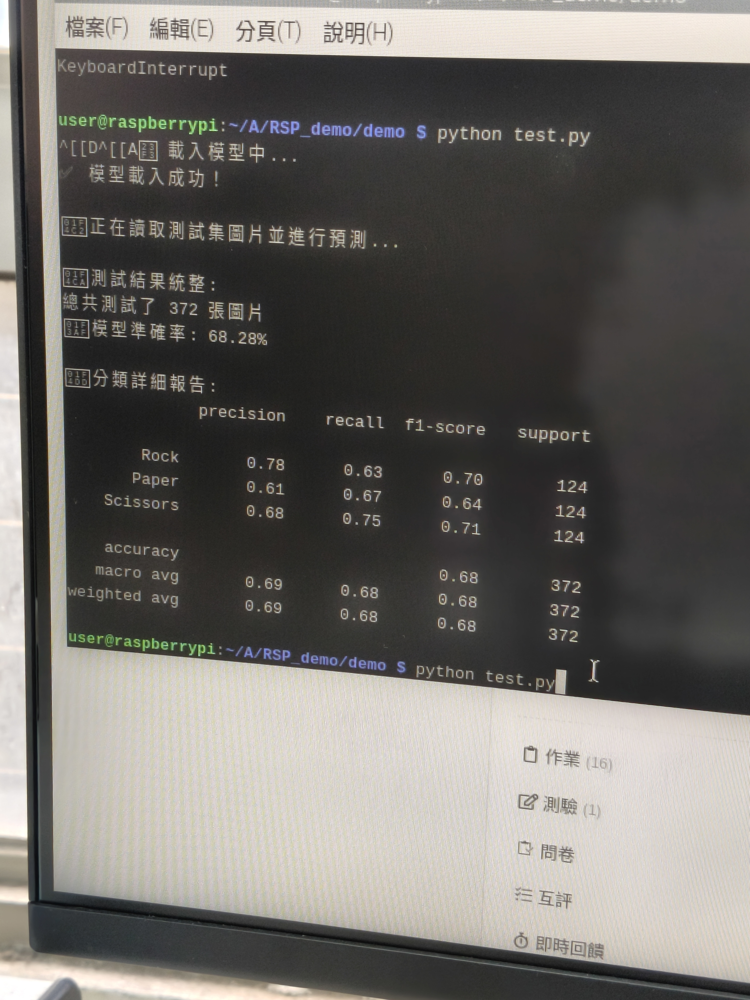
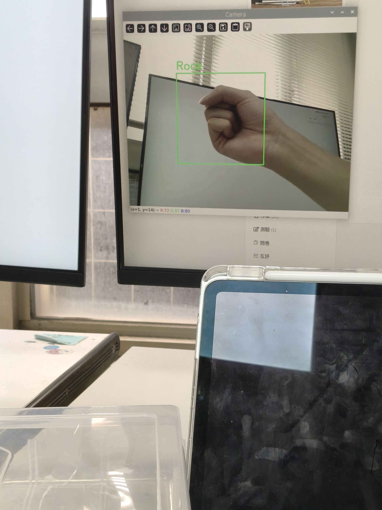

在 Raspberry Pi 4 上成功執行 test.py 與 carema.py：


課程：AIoT 系統實務 | 作業：HW4
原本的範例程式碼使用灰階影像像素 (Raw Pixels) 作為特徵，其解析度 64x64 產生 4,096 個特徵。這種方法極易受背景光線與手部位置影響。
本專案優化亮點：
原本老師提供的範例直接以灰階像素作為 SVM 的輸入特徵，容易受光線與背景干擾。因此我們導入了 MediaPipe 來優化特徵提取，其主要優點包含：
基於上述 MediaPipe 提取的高品質特徵，後端 SVM 採用 RBF 核函數 (C=10.0)，更能精確地區分不同手勢間的空間幾何距離，將準確率推升至極高水平。
使用 200 棵決策樹 (n_estimators=200)。透過多棵樹的隨機投票，試圖在非線性地標數據中尋找分類邊界。
| 指標 (Metric) | SVM+mediapipe | Random Forest |
|---|---|---|
| Accuracy (準確率) | 0.9377 | 0.7696 |
| Precision (精確率) | 0.9450 | 0.8647 |
| Recall (召回率) | 0.9377 | 0.7696 |
| F1-Score (F1值) | 0.9364 | 0.7447 |
分析結論：